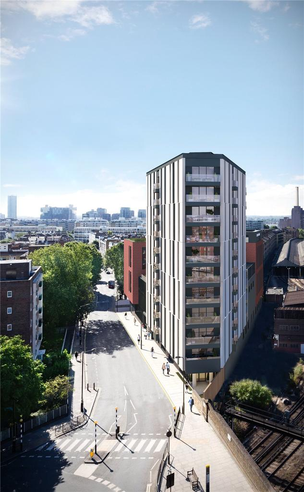

Who Are We?
-We are Hot Beans Web, the number 1 web designing company from London.
-Since 2004 we have been providing many users the web designing tools they need to succeed in this industry. From professional tips and tricks to providing website templates that our users can use.
-We began this journey in order to help encourage more younger people to get involved with the Website developing industry, an industry that we believe will not be going anywhere, anytime soon, as well as an industry that can provide a good living for many people.
-We have helped many younger, and older people get involved with web designing and hope that we can help you as well.
What We Do
-Hot Beans Web helps users to create websites by providing users with website templates as well as providing users with useful tips that will help them rise to the top of the website designing industry.
-We help users create websites that are compatible with laptops, mobile phones, tablets, and desktop PCs.
-We aim to be the biggest website designing business on the market so that we can help more people get into this industry.
Where to Find Us

Hot beans web is a business that is willing to take on any of your website design needs. We strive to help others by giving them guidance through our web designing programs. If you feel like joining the Hot Benas Web family then apply at the job roles page.
EMAIL US AT- enquiries@hotbeans.com
PHONE US AT - 0179542900
OR MEET US IN PERSON : St. Paul's Churchyard, London EC4M 8AD